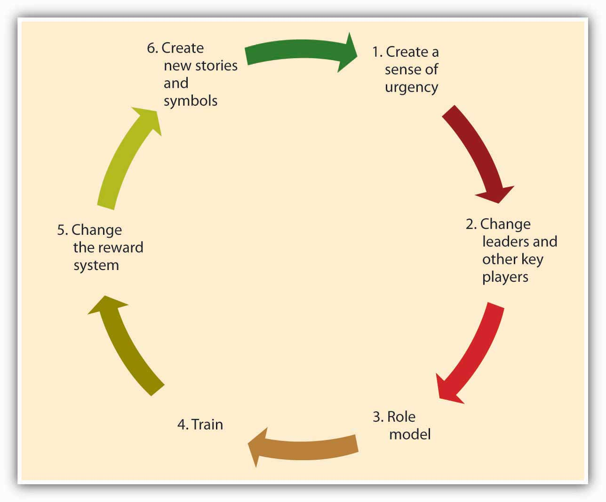

As emphasized throughout this chapter, culture is a product of its founder’s values, its history, and collective experiences. Hence, culture is part of a company’s DNA and is resistant to change efforts. Unfortunately, many organizations realize that their current culture constitutes a barrier against organizational productivity and performance. Particularly when there is a mismatch between an organization’s values and the demands of its environment, changing the culture becomes the key to the company turnaround.
Achieving culture change is challenging, and there are many companies that ultimately fail in this mission. Research and case studies of companies that successfully changed their culture indicate that the following six steps increase the chances of success.Schein, E. H. (1990). Organizational culture. American Psychologist, 45, 109–119.
Figure 8.15 Process of Culture Change
For the change effort to be successful, it is important to communicate the need for change to employees. One way of doing this is to create a sense of urgency on the part of employees, explaining to them why changing the fundamental way in which business is done is so important. In successful culture change efforts, leaders communicate with employees and present a case for culture change as the essential element that will lead the company to eventual success. As an example, consider the situation at IBM in 1993 when Lou Gerstner was brought in as CEO and chairman. After decades of dominating the market for mainframe computers, IBM was rapidly losing market share to competitors, and its efforts to sell personal computers—the original PC—were seriously undercut by cheaper “clones.” In the public’s estimation, the name IBM had become associated with obsolescence. Gerstner recalls that the crisis IBM was facing became his ally in changing the organization’s culture. Instead of spreading optimism about the company’s future, he used the crisis at every opportunity to get buy-in from employees.Gerstner, L. V. (2002). Who says elephants can’t dance? New York: HarperCollins.
A leader’s vision is an important factor that influences how things are done in an organization. Thus, culture change often follows changes at the highest levels of the organization. Moreover, to implement the change effort quickly and efficiently, a company may find it helpful to remove managers and other powerful employees who are acting as a barrier to change. Because of political reasons, self-interest, or habits, managers may create powerful resistance to change efforts. In such cases, replacing these positions with employees and managers giving visible support to the change effort may increase the likelihood that the change effort succeeds. For example, when Robert Iger replaced Michael Eisner as CEO of the Walt Disney Company, one of the first things he did was to abolish the central planning unit, which was staffed by people close to ex-CEO Eisner. This department was viewed as a barrier to creativity at Disney and its removal from the company was helpful in ensuring the innovativeness of the company culture.McGregor, J., McConnon, A., Weintraub, A., Holmes, S., & Grover, R. (2007, May 14). The 25 Most Innovative Companies. Business Week, 4034, 52–60.
Role modeling is the process by which employees modify their own beliefs and behaviors to reflect those of the leader.Kark, R., & Van Dijk, D. (2007). Motivation to lead, motivation to follow: The role of the self-regulatory focus in leadership processes. Academy of Management Review, 32, 500–528. CEOs can model the behaviors that are expected of employees to change the culture because these behaviors will trickle down to lower-level employees. For example, when Robert Iger took over Disney, to show his commitment to innovation, he personally became involved in the process of game creation, attended summits of developers, and gave feedback to programmers about the games. Thus, he modeled his engagement in the idea creation process. In contrast, the modeling of inappropriate behavior from the top will lead to the same behavior trickling down to lower levels. A recent example to this type of role modeling is the scandal involving Hewlett-Packard board members. In 2006, when board members were suspected of leaking confidential company information to the press, the company’s top-level executives hired a team of security experts to find the source of the leak. The investigators sought the phone records of board members, looking for links to journalists. For this purpose, they posed as board members and called phone companies to obtain itemized home phone records of board members and journalists. When the investigators’ methods came to light, HP’s chairman and four other top executives faced criminal and civil charges. When such behavior is modeled at top levels, it is likely to have an adverse effect on the company culture.Barron, J. (2007, January). The HP way: Fostering an ethical culture in the wake of scandal. Business Credit, 109, 8–10.
Well-crafted training programs may be instrumental in bringing about culture change by teaching employees the new norms and behavioral styles. For example, after the space shuttle Columbia disintegrated on reentry from a February 2003 mission, NASA decided to change its culture to become more safety sensitive and minimize decision-making errors that lead to unsafe behaviors. The change effort included training programs in team processes and cognitive bias awareness. Similarly, when auto repairer Midas felt the need to change its culture to be more committed to customers, they developed a program to train employees to be more familiar with customer emotions and connect better with them. Customer reports have been overwhelmingly positive in stores that underwent this training.BST to guide culture change effort at NASA. (2004 June). Professional Safety, 49, 16; J. B. (2001, June). The Midas touch. Training, 38, 26.
The criteria with which employees are rewarded and punished have a powerful role in determining the cultural values of an organization. Switching from a commission-based incentive structure to a straight salary system may be instrumental in bringing about customer focus among sales employees. Moreover, by rewarding and promoting employees who embrace the company’s new values and promoting these employees, organizations can make sure that changes in culture have a lasting effect. If the company wants to develop a team-oriented culture where employees collaborate with one another, then using individual-based incentives may backfire. Instead, distributing bonuses to intact teams might be more successful in bringing about culture change.
Finally, the success of the culture change effort may be increased by developing new rituals, symbols, and stories. Continental Airlines is a company that successfully changed its culture to be less bureaucratic and more team-oriented in 1990s. One of the first things management did to show employees that they really meant to abolish many of the company’s detailed procedures and create a culture of empowerment was to burn the heavy 800-page company policy manual in their parking lot. The new manual was only 80 pages. This action symbolized the upcoming changes in the culture and served as a powerful story that circulated among employees. Another early action was redecorating waiting areas and repainting all their planes, again symbolizing the new order of things.Higgins, J., & McAllester, C. (2004). If you want strategic change, don’t forget to change your cultural artifacts. Journal of Change Management, 4, 63–73. By replacing the old symbols and stories, the new symbols and stories will help enable the culture change and ensure that the new values are communicated.
Organizations need to change their culture to respond to changing conditions in the environment, to remain competitive, and to avoid complacency or stagnation. Culture change often begins by the creation of a sense of urgency. Next, a change of leaders and other key players may enact change and serve as effective role models of new behavior. Training can also be targeted toward fostering these new behaviors. Reward systems are changed within the organization. Finally, the organization creates new stories and symbols. Successful culture change requires managers that are proficient at all of the P-O-L-C functions. Creating and communicating a vision is part of planning; leadership and role modeling are part of leading; designing effective reward systems is part of controlling; all of which combine to influence culture, a facet of organizing.